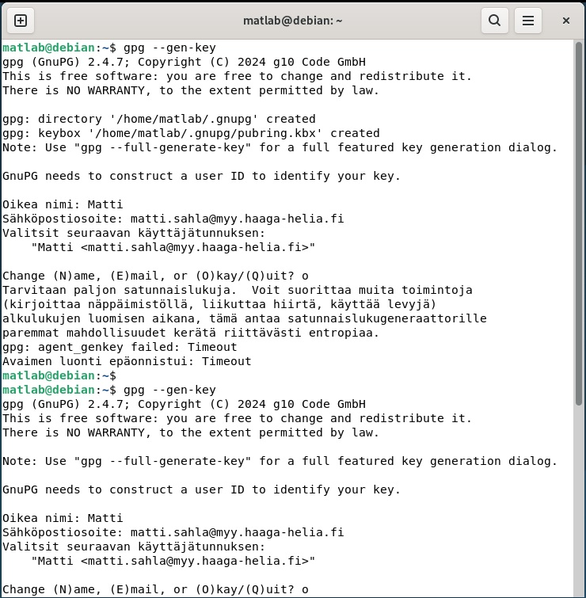
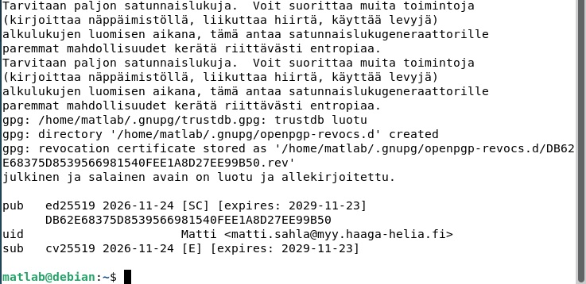
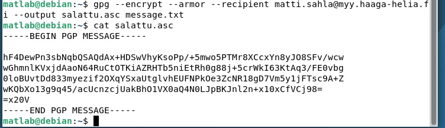
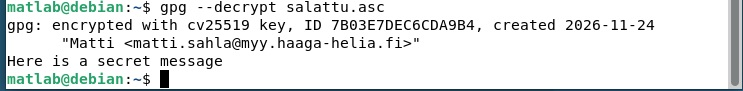

x) Read and summarize
Schneier (2015) – Applied Cryptography: 1.1 Terminology
- Plaintext is encrypted into ciphertext and then decrypted back into plaintext.
- Cryptography is protection of messages, cryptanalysis is breaking them. Cryptology is encompassing them both.
- Cryptography ensures authentication (verification of the sender), integrity (the message has not been altered) and nonredupidation (the sender cannot deny having sent the message).
- Restricted algorithm safety is based on the algorithm that is kept secret itself. As per modern standards these are complete inadequate because they cannot be standardized or publicly tested.
- In modern cryptography safety is based fully on the key and large key space. This is why the algorithm it self can be public.
- Symmetric algorithms use same secret key to encrypt and decrypt so it needs the key beforehand. Public key algorithms (asymmetric) use a public key for encryption and a separate private key for decrypting. Based on trap-day one-way functions.
Schneier (2015) – Applied Cryptography: 2.5 Communications Using Public-Key Cryptography
- As per Diffie & Hellman (1976) public-key cryptography works in principle like a mailbox. Anyone can encrypt using a public key, but only the holder of the private key can decrypt.
- Parties don't need to agree a secret key in advance - a public key can be sent directly or retrieved from a public database.
- Weakness is that public-key encryption is at least 1000 times slower than symmetric encryption and it's volatile to chosen-plaintext attacks.
- In hybrid cryptosystems the public-key encryption is used only to transmit a random, one-time session key, which is then used to rapidly encrypt the actual message traffic via a symmetric algorithm.
Karvinen (2023) – PGP - Send Encrypted and Signed Message - gpg
- PGP and command-line tool GPG enable the encryption (confidentiality) and signing (integrity and sender verification) of messages over an insecure network.
- Both parties generate their own public and private key pair.
- Public keys are exported into an ASCII format suitable for copying and imported into the other party's keyring. A public key can be transferred even over an unsecured channel.
- The authenticity of an imported key is verified by comparing its fingerprint, for example over the telephone, after which the key is marked as trusted by signing it.
- The sender encrypts the message using the recipient's public key and signs it with their own private key. Once encrypted, not even the sender can decrypt the message.
- The recipient decrypts the message using their own private key, at which point GPG simultaneously verifies the signature using the sender's public key.
a) Pubkey today - my touch
I do research studies on an unnamed website. I use my browser on my pc or on my mobile phone. The connection to the website is secured with HTTPS which relies on TLS (Transport Layer Security). The certification is granted by GoDaddy.
So the secure connection involves three parties - me (my browser), the website's server and GoDaddy as the Certificate authority (CA).
- When I connect to the site, the server sent its digital sertificate, which contains the servers public key. GoDaddy had previously verified the site's ownership and signed this certificate using GoDaddy's private Key. My browser verified this signature using GoDaddy's root public key. This confirmed that the public key genuinely belongs to the website.
- To prove it is legitimate owner of the certificate, the server signed the handshake data using the server's private key. My browser verified this signature using the server's public key extracted from the certificate.
- Both the browser and the server generated temporary public/private key pairs and exchanged their public keys. By combining the other party's public key with their own private key, both independently computed the exact same symmetric session key without ever transmitting the key itself over the network.
- Once the handshake was complete, the slower public-key cryptography was no longer used for traffic. All actual web traffic between my browser and the server was encrypted and decrypted using the fast symmetric session key.
b) Encrypt and decrypt a message
Screenshots


$ gpg --gen-key$ echo "Here is a secret message" > message.txt
$ gpg --encrypt --armor --recipient name@host.com --output salattu.asc message.txt
$ gpg --decrypt salattu.asc